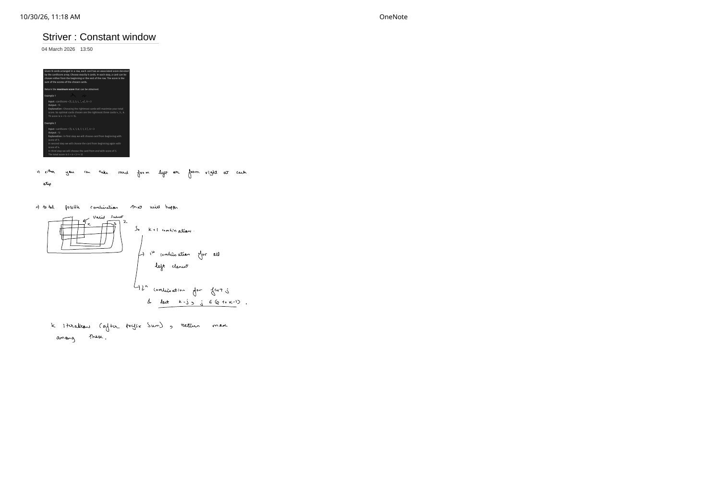
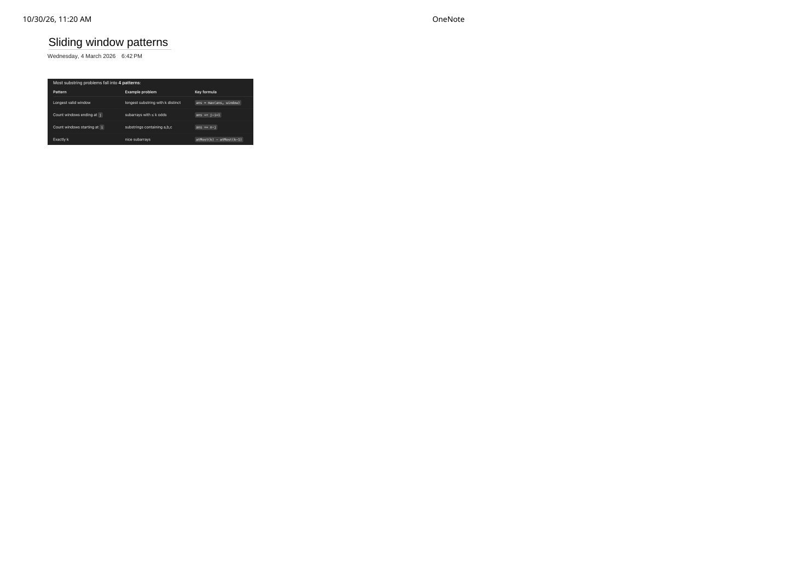

Constant Windows & The 4 Sliding Window Patterns
Expanded from handwritten competitive coding study notes (02_Striver_Constant_window.pdf, 03_Sliding_window_patterns.pdf)
Before diving into complex variable-size state tracking, two short handwritten pages capture the cleanest mental models in sliding-window problem solving: (1) how picking $k$ elements from either end of an array reduces to a $k$-step constant-size sliding window across the boundary, and (2) how almost every substring/subarray counting problem maps onto four exact update formulas.
1. Striver's Constant Window: Maximum Points from $K$ Cards (LC 1423)
Suppose $n$ cards are arranged in a row with scores cardScore[0..n-1], and in each step you must take one card from either the beginning or the end of the remaining row, choosing exactly $k$ cards in total. Greedy choice ("pick whichever end is currently larger") fails immediately—for example, on [5, 4, 1, 8, 7, 1, 3] with $k = 3$, taking $5$ then $4$ from the left and $3$ from the right yields $5 + 4 + 3 = 12$, whereas greedy $5 \to 4 \to 1 = 10$ misses the $3$ or traps you away from better splits.
Structural Observation: Only $k + 1$ Prefix–Suffix Splits Exist
Regardless of the interleaved order in which you pick left vs. right cards, after $k$ picks you have always taken some prefix of length $j$ from the left and a suffix of length $k - j$ from the right, for $j \in \{0, 1, \dots, k\}$:
- 1st combination ($j = k$): All $k$ elements from the left, $0$ from the right.
- Remaining $k$ combinations ($j = k - 1, \dots, 0$): First $j$ elements from the left plus last $k - j$ elements from the right.
Total valid subsets = $k + 1$. Each transition from $j$ to $j - 1$ simply drops cardScore[j - 1] from lsum and adds cardScore[n - (k - j + 1)] into rsum in $O(1)$ time!
Checking both examples from the note screenshot:
- Example 1:
cardScore = [1, 2, 3, 4, 5, 6], k = 3$\implies$ sums are $1+2+3=6$, $1+2+6=9$, $1+5+6=12$, $4+5+6=\mathbf{15}$. - Example 2:
cardScore = [5, 4, 1, 8, 7, 1, 3], k = 3$\implies$ sums are $10, \mathbf{12}, 9, 11 \implies \mathbf{12}$.
#include <algorithm>
#include <vector>
int maxScore(const std::vector<int>& cardPoints, int k) {
int n = static_cast<int>(cardPoints.size());
long long lsum = 0, rsum = 0;
// 1st combination: all k elements from the left
for (int i = 0; i < k; ++i) {
lsum += cardPoints[i];
}
long long max_sum = lsum;
// Remaining k iterations: trade one right-most prefix card for one end card
int r_idx = n - 1;
for (int i = k - 1; i >= 0; --i) {
lsum -= cardPoints[i];
rsum += cardPoints[r_idx--];
max_sum = std::max(max_sum, lsum + rsum);
}
return static_cast<int>(max_sum); // O(k) time, O(1) space!
}Notice that the Striver prefix–suffix rotation takes $O(k)$ time and $O(1)$ space—even faster than scanning the entire $O(n)$ array when $k \ll n$!
2. Breakdown of the 4 Universal Substring / Subarray Patterns
The second reference sheet (03_Sliding_window_patterns.pdf) distills variable-size substring and subarray problems into four exact accumulator rules. Understanding why each formula works prevents mixing up j - i + 1 and n - j:
| Pattern | Example Problem | Key Formula | Combinatorial Meaning |
|---|---|---|---|
| 1. Longest valid window | Longest substring with $\le k$ distinct chars (LC 340 / LC 904) | ans = max(ans, j - i + 1) |
For fixed right endpoint $j$, $i$ is the farthest-left start keeping $[i..j]$ valid. |
2. Count windows ending at j |
Subarrays with $\le k$ odds / product $< k$ (LC 713) | ans += j - i + 1 |
If $[i..j]$ satisfies an "at most" condition, then every suffix $[i..j], [i+1..j], \dots, [j..j]$ ($j - i + 1$ subarrays) also satisfies it! |
3. Count windows starting at i(or ending at $\ge j$) |
Substrings containing all of a, b, c (LC 1358) |
ans += n - j |
Once $[i..j]$ satisfies an "at least" requirement for the first time at $j$, extending right to $j, j+1, \dots, n-1$ gives $n - j$ valid substrings starting at $i$! |
| 4. Exactly $k$ | Count Number of Nice Subarrays ($k$ odds, LC 1248) / Binary Sum $== k$ (LC 930) | atMost(k) - atMost(k - 1) |
Set difference: $\{\text{cost} \le k\} \setminus \{\text{cost} \le k - 1\} = \{\text{cost} == k\}$. |
Deep Dive: Why ans += j - i + 1 vs. ans += n - j?
Students frequently confuse Pattern 2 and Pattern 3. They correspond to opposite directions of monotonicity:
Pattern 2 ("At Most" — Closed Under Shrinking): ans += j - i + 1
Suppose $[i..j]$ has at most $k$ odd numbers, and $i$ is the smallest valid start for this $j$. Shrinking the left boundary cannot add odd numbers, so:
are all valid and are the exact set of valid subarrays ending at index $j$. Since $j$ advances by $1$ each outer loop iteration, partitioning all subarrays by their unique right endpoint $j$ counts every valid subarray once and only once.
Pattern 3 ("At Least" — Closed Under Extending): ans += n - j
Suppose we want substrings containing at least one of each of 'a', 'b', 'c' (LC 1358). Fix right pointer $j$ (or advance $j$ until $[i..j]$ first contains all three characters). Once $[i..j]$ has all three characters, appending more characters on the right can never lose 'a', 'b', or 'c'! Thus for that left start $i$, every right endpoint $r \in \{j, j+1, \dots, n-1\}$ is valid—giving $n - j$ valid substrings starting at $i$—before we increment $i$ inside a while (valid) loop:
#include <string>
// Pattern 3 in action: LC 1358 — Number of Substrings Containing All Three Characters
int numberOfSubstrings(const std::string& s) {
int n = static_cast<int>(s.size());
int freq[3] = {0, 0, 0};
long long ans = 0;
for (int i = 0, j = 0; j < n; ++j) {
++freq[s[j] - 'a'];
// While [i..j] is valid, EVERY extension [i..j], [i..j+1], ..., [i..n-1]
// starting at this i is valid (n - j substrings), then we retire i!
while (freq[0] > 0 && freq[1] > 0 && freq[2] > 0) {
ans += (n - j);
--freq[s[i++] - 'a'];
}
}
return static_cast<int>(ans);
}Pattern 4 in Action: LC 1248 — Count Number of Nice Subarrays
Why can't a single while (odds > k) loop directly count subarrays with exactly $k$ odd numbers? Because even numbers contribute $0$ to the odd count! For a fixed $j$, there is generally an entire range of left pointers $[i_{\min}..i_{\max}]$ that all yield odds == k. Instead of maintaining three pointers $(i_{\min}, i_{\max}, j)$, calling our clean Pattern 2 helper twice solves it in 12 lines:
#include <vector>
int numberOfSubarrays(const std::vector<int>& nums, int k) {
auto atMost = [&](int max_odds) -> long long {
if (max_odds < 0) return 0;
long long count = 0;
int odds = 0;
for (int i = 0, j = 0; j < static_cast<int>(nums.size()); ++j) {
odds += (nums[j] & 1);
while (odds > max_odds) {
odds -= (nums[i++] & 1);
}
count += (j - i + 1); // Pattern 2: windows ending at j
}
return count;
};
return static_cast<int>(atMost(k) - atMost(k - 1));
}- "At most $k$" $\implies$ shrink while
> k, thenans += j - i + 1(counts by right endpoint $j$). - "At least $k$" $\implies$ inside
while (valid), doans += n - jandi++(counts by left endpoint $i$); equivalently, $\binom{n+1}{2} - \text{atMost}(k - 1)$. - "Exactly $k$" $\implies$
atMost(k) - atMost(k - 1)whenever the window metric is non-decreasing with window expansion.
From the Handwritten Notes
Expand the original handwritten pages below to inspect the exact derivations, dry runs, and annotations:
View original note — Striver Constant Window: K Cards from Ends (LC 1423)


02_Striver_Constant_window.pdf (Page 1): enumerating all $k + 1$ prefix/suffix card combinations in $k$ sliding iterations.View original note — Sliding Window Patterns Summary Table


03_Sliding_window_patterns.pdf (Page 1): the 4 canonical substring/subarray patterns and their update formulas.